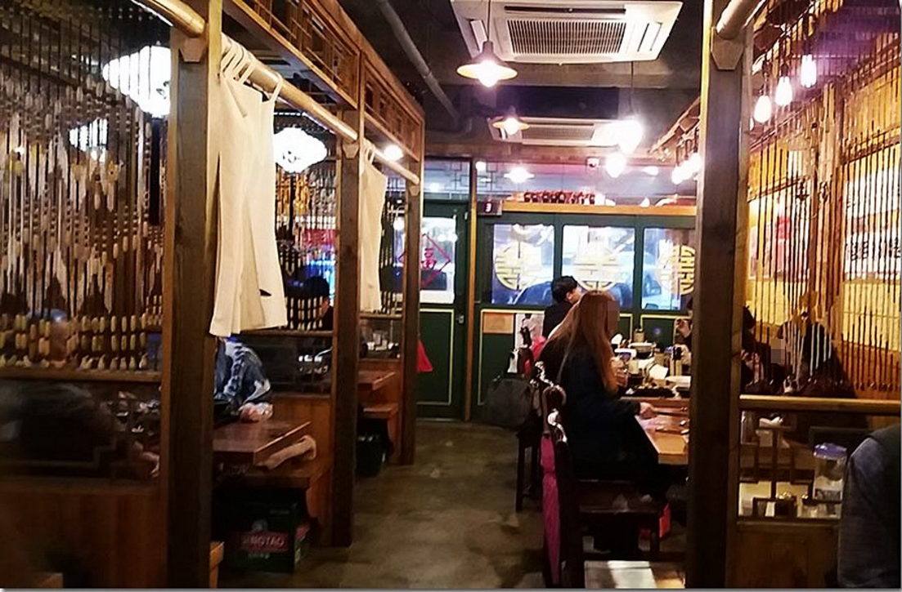
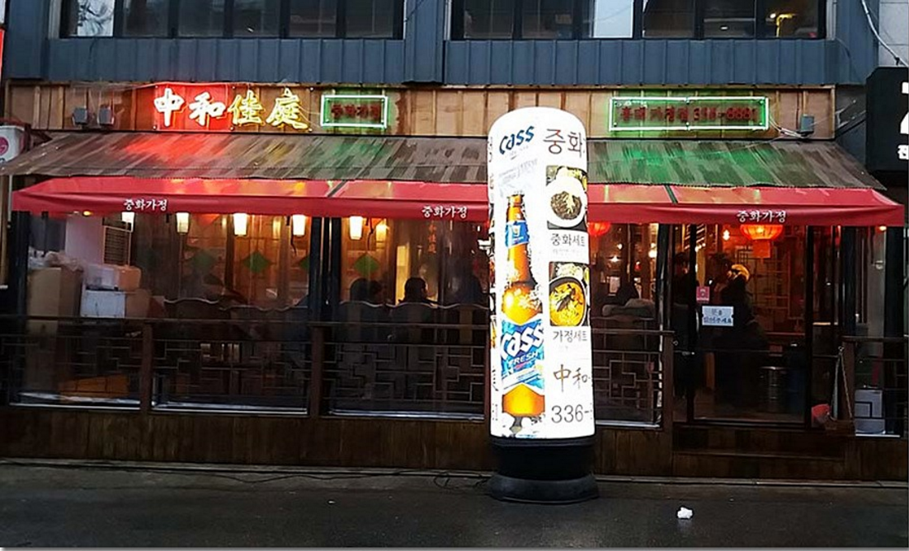
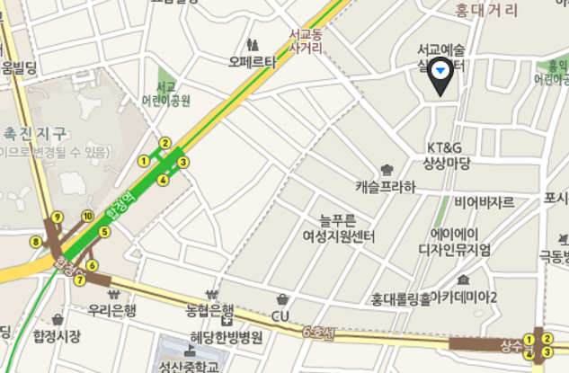
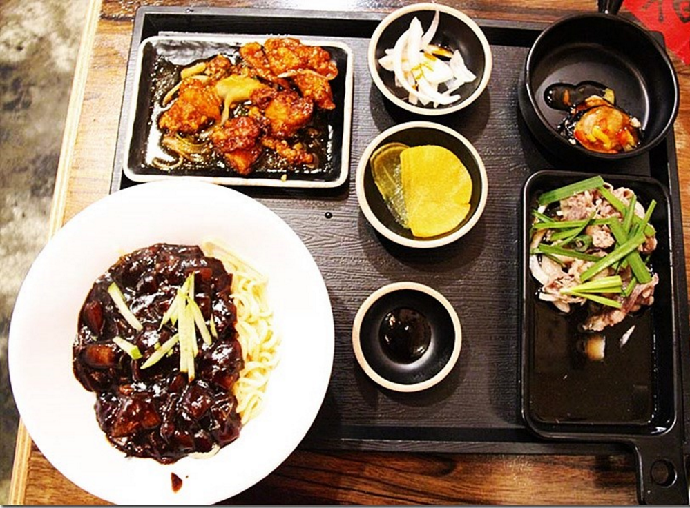
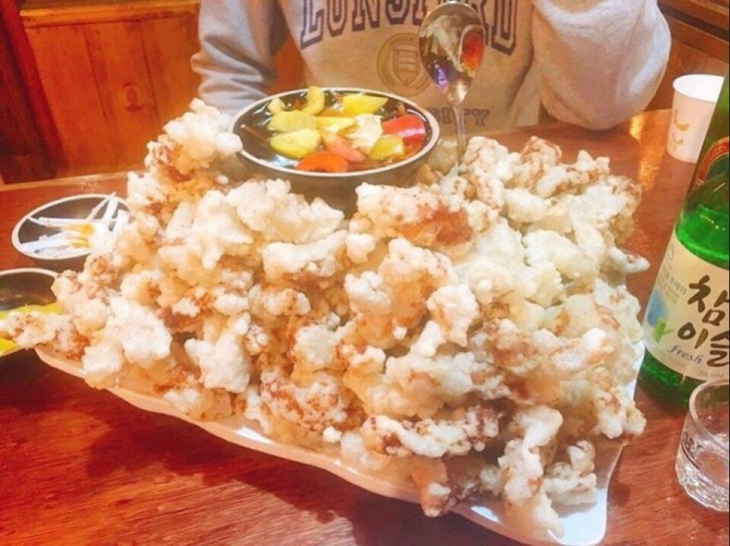
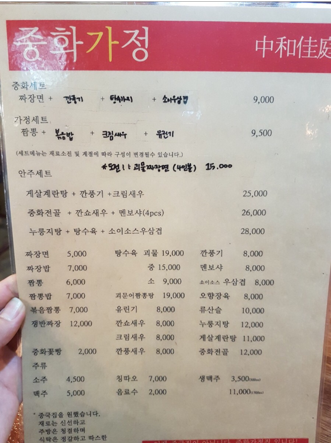

중화가정


1. 위치 및 소개
위치:

소개:
- 합정역과 상수역 인근에 위치하여 찾아가기 편합니다.
- 최근 SNS에서 떠오로는 홍대의 신흥 중화요리집중 하나입니다.
- 짜장면, 깐풍기, 우삼겹, 가지탕수가 세트로 되어있어 여러가지를 맛 볼수 있습니다.
- 이곳의 대표메뉴중 하나인 탕수육은 많은 양을 준다고 하여 괴물 탕수육이라고 합니다.
- 요리 메뉴들의 가격이 싸서 평상시에 비싸서 못먹어봤던 요리들을 부담없이 먹을수 있습니다.
- 인테리어가 홍콩의 식당과 비슷하여 홍콩에 온것같은 느낌을 느끼게 해줍니다.
전화번호: 02-336-8881
영업시간: 11:00 - 23:00



2. 메뉴
| |
추천 메뉴 |
| 이름 |
중화 세트 |
가정 세트 |
짬뽕 |
괴물 탕수육 |
괴물 짜장면 |
| 가격 |
9,000\ |
9,500\ |
6,000\ |
19,000\ |
15,000\ |
3. 식당평가
중화가정은 홍콩에있는 식당을 옮겨온것 같은 집입니다. 가장 최근에 가본 곳이기 때문에 기억에 남는 부분이 많은데요.
짬뽕에 돼지고기가 들어가있어서 신기했고 그래서 그런지 일반짬뽕과 달리 색다른 맛이었습니다.
그리고 이집이 SNS에서 떠오르게 해줬던 괴물탕수육은 사진과 같이 양이 많았고 맛 또한 좋았습니다.
혹시라도 돼식가이면 괴물짜장면 12분안에 다먹기를 도전하시는것도 좋을것같습니다. 12분안에 다드시면 무료입니다.
한마디 평가: 홍대에서 색다른 중식을 먹고싶을때 갈만한 곳
4. 평점
★★★☆☆
(주) FOOD PARTNER 대표이사 김현석 서울특별시 강서구 허준로 176 (가양동, 8단지)
전화 010-5292-7308
E-mail : kjuk02@naver.com
사업자등록번호 2014-30-50 음식판매업 신고 제2014-국민소형-3050호 사업자정보확인
copyright (C) FP inc. All rights reserved.